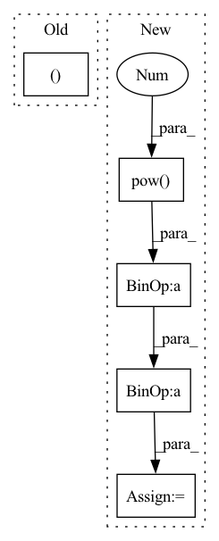

Pattern ID :37463
Before Change
if n_dim == 3:
n_channels = 1
batch_size, n_freqs, n_frames = input.size()
else:
batch_size, n_channels, n_freqs, n_frames = input.size()
input = input.reshape(batch_size * n_channels, n_freqs, n_frames)After Change
entry_count = entry_count.expand_as(cumulative_sum) // [1, T] => [B, T]
cumulative_mean = cumulative_sum / entry_count // [B, T]
cumulative_var = (cumulative_pow_sum - 2 * cumulative_mean * cumulative_sum) / entry_count + cumulative_mean.pow(2 ) // [B, T]
cumulative_std = torch.sqrt(cumulative_var + EPSILON) // [B, T]
cumulative_mean = cumulative_mean.reshape(batch_size * num_channels, 1, num_frames)
cumulative_std = cumulative_std.reshape(batch_size * num_channels, 1, num_frames)In pattern: SUPERPATTERN
Frequency: 3
Non-data size: 5
Instances Fragment ID: 107974494
Project Name: haoxiangsnr/fullsubnet
Commit Name: 321920989a4aa255158770213e814befc8f94f27
Time: 2021-02-08
Author: haoxiangsnr@gmail.com
File Name: audio_zen/model/base_model.py
M Class Name: BaseModel
N Class Name: BaseModel
M Method Name: cumulative_layer_norm(1)
N Method Name: cumulative_layer_norm(1)
M Parent Class: nn.Module
N Parent Class: nn.Module
M File Name: audio_zen/model/base_model.py
N File Name: audio_zen/model/base_model.py
M Start Line: 225
M End Line: 261
N Start Line: 276
N End Line: 304
Before Change
y = G.y % 2
// return data objects needed for the network
return x, edge_index, y
def decision_function(self, G):
Predict raw anomaly score of X using the fitted detector.
The anomaly score of an input sample is computed based on distance After Change
// adjacency matrix normalization
rowsum = dense_adj.sum(1)
d_inv_sqrt = torch.pow( rowsum, -0.5 ) .flatten()
d_inv_sqrt[torch.isinf(d_inv_sqrt)] = 0.
d_mat_inv_sqrt = torch.diag(d_inv_sqrt)
adj = (dense_adj * d_mat_inv_sqrt).T * d_mat_inv_sqrt
edge_index = edge_index.to(self.device)
adj = adj.to(self.device) Fragment ID: 107974471
Project Name: pygod-team/pygod
Commit Name: 929c5b097a9b6f23790b09174ad9d59bb38e9e79
Time: 2022-03-31
Author: dingxueying15@gmail.com
File Name: pygod/models/ocgnn.py
M Class Name: OCGNN
N Class Name: OCGNN
M Method Name: process_graph(2)
N Method Name: process_graph(2)
M Parent Class: BaseDetector
N Parent Class: BaseDetector
M File Name: pygod/models/ocgnn.py
N File Name: pygod/models/ocgnn.py
M Start Line: 314
M End Line: 319
N Start Line: 317
N End Line: 333
Before Change
action = action.tanh()
return action, std
if __name__ == "__main__":
use_cuda = torch.cuda.is_available()After Change
action = action_base.tanh()
// According to "Soft Actor-Critic" (Haarnoja et. al) Appendix C
action_bound_compensation = torch.log(1. - action.tanh().pow(2) + 1e-6)
action_bound_compensation = action_bound_compensation.sum(dim=-1, keepdim=True)
log_prob.sub_(action_bound_compensation)
return action, log_prob Fragment ID: 107974501
Project Name: tmdt-buw/karolos
Commit Name: e8ce439013ace3e3e9647de55ed22ddf38f35396
Time: 2020-04-23
Author: scheiderer@uni-wuppertal.de
File Name: agents/nnfactory/sac.py
M Class Name: Policy
N Class Name: Policy
M Method Name: forward(3)
N Method Name: forward(3)
M Parent Class: nn.Module
N Parent Class: nn.Module
M File Name: agents/nnfactory/sac.py
N File Name: agents/nnfactory/sac.py
M Start Line: 103
M End Line: 115
N Start Line: 104
N End Line: 123